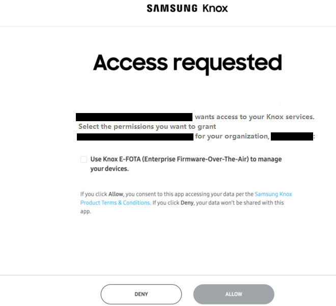

Authentication for Knox E-FOTA
Last updated March 18th, 2025
Before you can access the Knox E-FOTA API, you must set up Knox OAuth 2.0 Authentication. This guide will cover how to set up authentication for secure access to the Knox E-FOTA API.
UAT test accounts require a different security certificate. To use UAT test accounts, please contact Samsung support.
Register an app
The first step of Knox OAuth 2.0 Authentication is to register your application. See the full steps on how to Register new app.
OAuth 2.0 scopes are used to specify the level of access your application has to your customer’s Knox E-FOTA resources. When you register your application, make sure you add the required scopes so your application can access various features of Knox E-FOTA.
You can request more granular access permissions by only adding scopes for specific Knox E-FOTA operations. If multiple scopes are requested, the user must consent to all of them and may not select individual scopes. For a superior customer experience, please ensure that your application requests the least number of scope permissions.
Here is a list of scopes you can add for Knox E-FOTA:
| Scope | Permission |
|---|---|
ke |
Manage all Knox E-FOTA functionality. |
ke.campaign |
View, assign, create, delete, and cancel Knox E-FOTA campaigns. |
ke.campaign:view |
View Knox E-FOTA campaign information. |
ke.campaign:assign |
Assign or unassign devices from a Knox E-FOTA campaign. |
ke.campaign:manage |
Create and edit Knox E-FOTA campaigns. |
ke.campaign:delete |
Delete and cancel Knox E-FOTA campaigns. |
ke.devices |
View, upload, manage, and delete Knox E-FOTA devices. |
ke.devices:view |
View Knox E-FOTA device information. |
ke.devices:manage |
Upload, refresh, and unenroll Knox E-FOTA devices. |
ke.devices:delete |
Delete devices from Knox E-FOTA. |
ke.licenses |
View, register, and delete Knox E-FOTA licenses. |
ke.licenses:view |
View Knox E-FOTA license information. |
ke.licenses:manage |
Register commercial licenses and generate trial licenses for Knox E-FOTA. |
ke.licenses:delete |
Delete Knox E-FOTA licenses. |
ke.fota:view |
View Knox E-FOTA firmware information. |
ke.privacyPolicy |
View and manage the skip privacy policy setting. |
ke.privacyPolicy:view |
View the skip privacy policy setting. |
ke.privacyPolicy:manage |
Manage the skip privacy policy setting. |
When adding the redirect URL, Samsung servers will only communicate with URLs that you have identified as trusted.
- URLs must be absolute:
- Use
https://dev.example.com/oauth2/EMM/redirect, not/oauth2/EMM/redirect.
- Use
- Parameters are ignored:
https://dev.example.com/oauth2/EMM/redirect?id=1will becomehttps://dev.example.com/oauth2/EMM/redirect.
- URLs cannot include ‘#’ or ‘*’:
https://dev.example.com/oauth2/EMM/redirect#exampleis invalid.
3-legged Knox OAuth 2.0 Authentication
After you’ve registered your app, you can begin the 3-legged authentication process to access your customer’s Knox E-FOTA resources on their behalf.
Step 1: Request an authorization code
To request an authorization code, you must direct the client’s browser to Samsung’s authorization page, where your customer either accepts or denies your application’s permission request to access their Knox E-FOTA resources. See how to get an Authorization code.
Here is a Java code sample to get an authorization code:
For more information, see the Knox OAuth 2.0 Authentication API reference.
Once you request an authorization code, the following occurs:
-
If this is a first-time request, the permission request timed out, or if permission was manually revoked by your customer, their browser is redirected to Samsung’s authorization consent page. If your customer has already granted permission previously, this authorization page is bypassed and your customer is immediately redirected to the URL provided in the
redirect_uriquery parameter. -
Once redirected, your customer is prompted to log in to their Samsung Account or through an IdP.
-
When your customer logs in, they are shown an access request page which identifies your application and outlines the particular permissions and scopes that your application is requesting. Here, they can choose which permissions to grant, and click Allow to approve your application’s request to access their Knox E-FOTA resources on their behalf.

-
When your customer completes the authorization process, their browser is redirected to the URL provided in the
redirect_uriquery parameter. When this happens, your app is given an authorization code, which is used to exchange for an access token. To protect customer data, authorization codes have a short expiration time. You can configure the authorization code expiration time between 1 and 5 minutes when you register your app.
This approval process ensures that Samsung customers are aware of what level of granularity an application may access or action it may perform on their behalf. For example,
kescope will grant access to all Knox E-FOTA related actions and resources, whileke.campaignwill only grant access to campaign related actions and resources.If the scope permissions change in your app, your customers must re-authenticate to ensure that they have explicitly granted your application all of the permissions that it is requesting on their behalf.
If Knox E-FOTA is connected to your UEM console, your customer might encounter an issue where the EMM group sync feature is unavailable on their Knox E-FOTA console. On the console, the following warning is displayed:
EMM group sync features are unavailable because your data is being managed outside Knox E-FOTA.
If EMM group sync is unavailable, all EMM groups stop syncing, and the EMM instances are disconnected from Knox E-FOTA.
Failed requests
If your customer chooses to cancel, or the request fails for any reason, the client is redirected to your redirect_uri with the corresponding error:
- “response_type” parameter of authorization request is missing or invalid.
- “redirect_uri” parameter of authorization request is invalid.
- “client_id” parameter of authorization request is missing or invalid.
For more information, refer to the Authorization server API reference.
Step 2: Exchange authorization code for an access token
The next step is to get an access token for your application using the authorization code from the previous step. See how to Get access and refresh tokens.
To protect customer data, access tokens have an expiration time. You can configure the access token expiration time between 1 and 60 minutes when you register your app.
Here is a Java code sample that requests an access token:
private HttpResponse<String> getAccessToken(String code) throws URISyntaxException, IOException, InterruptedException {
String redirectUri = SELF_URI + "redirect";
String tokenUrl = AUTH_URI + "oauth2/token";
Map<String, String> parameters = new HashMap<>();
parameters.put("grant_type", "authorization_code");
parameters.put("code", code);
parameters.put("redirect_uri", redirectUri);
parameters.put("client_id", CLIENT_ID);
parameters.put("client_secret", CLIENT_SECRET);
parameters.put("code_verifier", codeVerifier);
String body = convertToUrlEncoded(parameters);
HttpClient client = HttpClient.newHttpClient();
HttpRequest request = HttpRequest.newBuilder()
.uri(new URI(tokenUrl))
.headers("Content-Type", "application/x-www-form-urlencoded")
.POST(HttpRequest.BodyPublishers.ofString(body))
.build();
return client.send(request, HttpResponse.BodyHandlers.ofString());
}
private String convertToUrlEncoded(Map<String, String> parameters) {
return parameters.entrySet()
.stream()
.map(e -> e.getKey() + "=" + URLEncoder.encode(e.getValue(), StandardCharsets.UTF_8))
.collect(Collectors.joining("&"));
}
public String redirect(@RequestParam String code,
@RequestParam String state) throws URISyntaxException, IOException, InterruptedException {
if (!Objects.equals(state, this.state)) {
return "Invalid state parameter!";
}
var response = getAccessToken(code);
if (response.statusCode() != 200) {
return "Something went wrong. Status code: " + response.statusCode();
}
Instant currentTime = Instant.now();
JSONObject json = new JSONObject(response.body());
accessToken = json.getString("access_token");
refreshToken = json.getString("refresh_token");
expiresIn = json.getInt("expires_in");
expirationTime = currentTime.plusSeconds(expiresIn);
return "Authorized successfully!";
}
For more information, see the Knox OAuth 2.0 Authorization API reference.
Step 3: Call the Knox E-FOTA API
Once you’ve obtained an access token, you can start making authenticated API requests on behalf of your customer by including an Authorization header in the request.
Here is a Java code sample that uses an access token to call GET /campaignSchemas.
private HttpResponse<String> getCampaignSchemas(String accessToken) throws URISyntaxException, IOException, InterruptedException {
String campaignSchemasUrl = apiUri + "campaignSchemas";
HttpClient client = HttpClient.newHttpClient();
HttpRequest request = HttpRequest.newBuilder()
.uri(new URI(campaignSchemasUrl))
.headers("Authorization", "Bearer " + accessToken)
.GET()
.build();
return client.send(request, HttpResponse.BodyHandlers.ofString());
}
Step 4: Refresh access token
To protect customer data, access tokens are only valid for a limited time. To avoid having to send your customers through the authorization process again, the Knox OAuth 2.0 Authentication API also provides a refresh token along with the access token in step 2.
As long as it’s valid, you can use the refresh token obtained to request for another access token without needing an authorization code, which means your customers won’t have to go through the authorization process in step 1 again. The refresh token expiration time can be configured between 60 minutes and 90 days, and you can set this value when you register your app.
Here is a Java code sample that requests for an access token using a refresh token:
private HttpResponse<String> getTokenRefresh(
String refreshToken) throws URISyntaxException, IOException, InterruptedException {
String tokenUrl = authUri + "oauth2/token";
Map<String, String> parameters = new HashMap<>();
parameters.put("grant_type", "refresh_token");
parameters.put("client_id", clientId);
parameters.put("client_secret", clientSecret);
parameters.put("refresh_token", refreshToken);
String body = convertToUrlEncoded(parameters);
HttpClient client = HttpClient.newHttpClient();
HttpRequest request = HttpRequest.newBuilder()
.uri(new URI(tokenUrl))
.headers("Content-Type", "application/x-www-form-urlencoded")
.POST(HttpRequest.BodyPublishers.ofString(body))
.build();
return client.send(request, HttpResponse.BodyHandlers.ofString());
}
Automate refresh access token
Here’s a code sample which calls GET /campaignSchemas, and automatically requests for a new access token using the refresh token if the previous one expired.
private String getCampaignSchemas() throws URISyntaxException, IOException, InterruptedException {
//If our access token is expired we will get a new one.
tokenRefreshIfExpired();
var response = getCampaignSchemas(accessToken);
return response.body();
}
private void tokenRefreshIfExpired() throws URISyntaxException, IOException, InterruptedException {
//Check if our access token is still valid.
if (expirationTime.isAfter(Instant.now().plus(30L, ChronoUnit.SECONDS))) {
System.out.println("Access token is still valid");
return;
}
//If our token is expired, we need to send request for token refresh.
var response = getTokenRefresh(refreshToken);
if (response.statusCode() != 200) {
System.out.println("Something went wrong. Status code: " + response.statusCode());
}
Instant currentTime = Instant.now();
JSONObject json = new JSONObject(response.body());
accessToken = json.getString("access_token");
refreshToken = json.getString("refresh_token");
expiresIn = json.getInt("expires_in");
expirationTime = currentTime.plusSeconds(expiresIn);
System.out.println("Access token was refreshed.");
}
Add your own custom error handling, logging, and exception propagation based on your application’s specific requirements.
Get started with Knox E-FOTA
Once you complete Knox OAuth 2.0 Authentication, you can begin calling the Knox E-FOTA API.
Get startedOn this page
Is this page helpful?